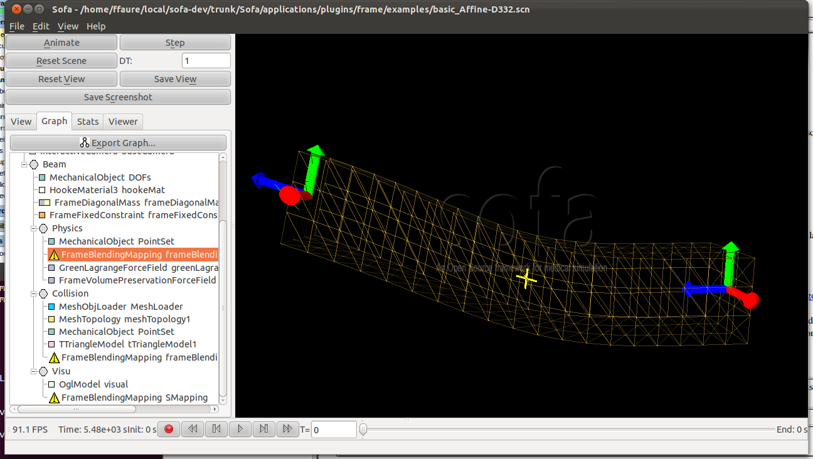

|
|
|
| Stiffness. |
Frames
and sampling points. |
Simulation:
rigid hull, flexible head and legs. |
| Video: Exampde of volumetric data, discretization and animations. |
|
|
| Snapshot of a simulation. The frames are the control nodes, while the yellow cross is the sampling point with an elaston. The wireframe mesh is a visual model. |
|  |
| Turtle with rigid hull (in red) and flexible
parts (in blue). |
||||||
|
| Steak graph. |
 |
 Frame-based
Elastic Models Benjamin Gilles; Guillaume Bousquet;
François Faure; Dinesh Pai, ACM Transactions on Graphics, ACM,
2011, 30 (2)
Frame-based
Elastic Models Benjamin Gilles; Guillaume Bousquet;
François Faure; Dinesh Pai, ACM Transactions on Graphics, ACM,
2011, 30 (2)  Sparse
Meshless Models of Complex Deformable Solids François Faure;
Benjamin Gilles; Guillaume Bousquet; Dinesh K. Pai, ACM
Transactions on Graphics, ACM, 2011, Proceedings of SIGGRAPH'2011
Sparse
Meshless Models of Complex Deformable Solids François Faure;
Benjamin Gilles; Guillaume Bousquet; Dinesh K. Pai, ACM
Transactions on Graphics, ACM, 2011, Proceedings of SIGGRAPH'2011DEFINES += SOFA_HAVE_FRAME
contains(DEFINES, SOFA_HAVE_FRAME) { usePlugin(frame) } | Authors |
Guillaume Bousquet (INRIA-EVASION), Benjamin Gilles (INRIA-EVASION, UBC Vancouver), François Faure (INRIA-EVASION). |
| Contact |
Francois.Faure@inria.fr |
| License |
This plugin is distributed under the same license as the core of SOFA. |
| Patents |
|
| APP registration |
|
| Sponsors |
Canadian Institutes of Health Research, Canada Research Chairs Program, NSERC, Peter Wall Institute for Advanced Studies, MITACS, Human Frontier Science Program, French ANR project “SoHuSim“ and European project “Passport for Liver Surgery” (FP7, ICT-2007.5.3) |